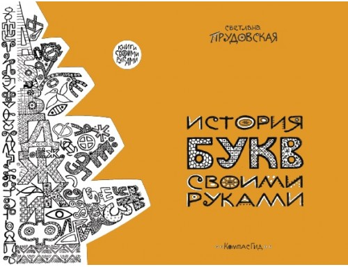
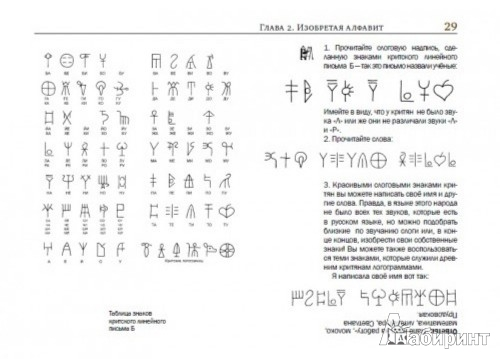
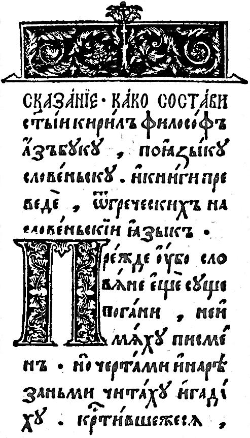
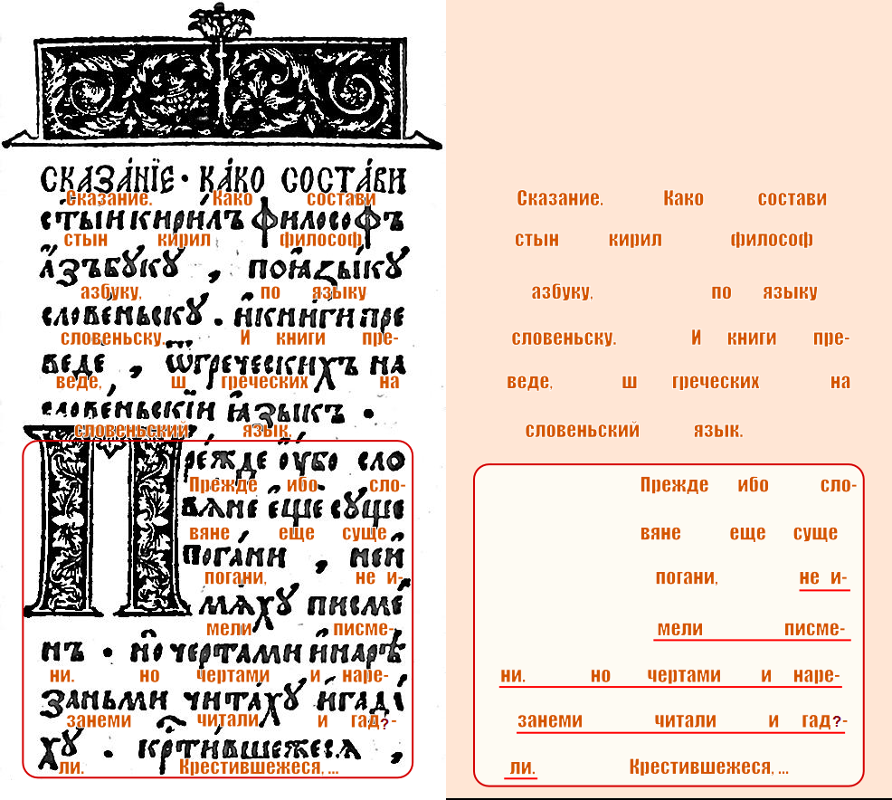
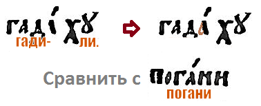
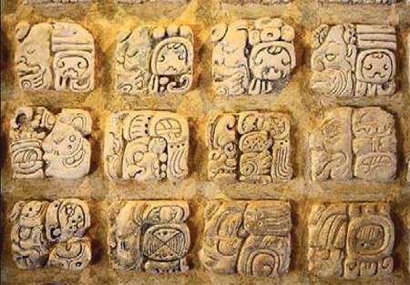

"Что написано пером - не вырубишь топором" - гласит русская народная мудрость. Казалось бы, чего уж проще: вот слово, оно написано, и не станет оно другим. Но в современном мире находятся люди, которые ради отрицания очевидного готовы искажать факты и делать простые вещи сложными. Они намеренно, как фокусники, уводят внимание человека в сторону, чтобы он не понимал что вокруг происходит. Они кровно заинтересованы в том, чтобы окружали их люди необразованные, в глупости своей доверяющие любой лжи, поданной "со значением". Им нужны люди верующие. Слепо верующие в то, что навешивают на уши.
Повествование свое начну с того, что я купил прекрасную детскую книжку Светланы Прудовской "История букв своими руками". Есть у меня такая слабость - я с удовольствием покупаю настоящие, хорошо оформленные детские книги с интересным изложением. Это новая книга. Выпущена она в 2013 году издательским домом "Компас-Гид".


Каждому родителю я рекомендую купить эту книгу в личную библиотеку ребенка. Ценность этой книги в том, что в ней последовательно и подробно рассказывается вся мировая история возникновения письменности. Не сказать, что до ее прочтения я ничего о системах древних письменностей не знал. По мере сил я интересовался и древнеегипетским письмом, и расшифровкой письменности майя, и скандинавскими рунами. Знал о том, как появились некоторые символы букв, сохранившиеся в современных языках. Но книга Прудовской быстро и легко систематизировала мои знания, и я даже вспомнил то, что начал забывать за давностью лет.
В этой книге есть множество творческих упражнений по прочтению различных зашифрованных и древних текстов, которые автор предлагает проделывать по мере чтения. И я, просто для развлечения, эти упражнения методично прорабатывал. К концу книги глаз стал уже наметанным, и прочтение всяких разнообразных закорючек уже не вызывало никакого дискомфорта, все само собой складывалось в уме. Ну а древняя кириллица стала читаться, как говорится, "влет".
И надо же было такому случиться, что при поисках в Сети некоторых уточнений, я наткнулся на следующую страницу в Википедии:
Дохристианская письменность у славян
http://ru.wikipedia.org/wiki/Проблема_дохристианской_письменности_у_славян
"О", - сказал я себе, - "почитаем!". В принципе, о дохристианской письменности славян все уже было сказано - прямых доказательств нет, сведения разрозненные, исторические памятники отсутсвуют. То же самое написано и в данной статье. То же самое читал я и раньше. Однако, читая эту статью, я сразу споткнулся об одну явную несуразицу. Виной тому стало мое новое обретенное умение - я стал легко читать древнеславянский текст.
Мне сразу бросился в глаза следующий абзац:
О существовании каких-то знаков для письма (или счёта) и гадания («черты и резы») у славян-язычников пишет Черноризец Храбр в своем «Сказании о писменех»: «…Прежде убо словѣне не имѣху писменъ (вариант: книгъ), нъ чрътами и рѣзами чьтѣху и гатааху, погани суще…». Глагол чисти значит как «читать», так и «считать»; книгы (мн. ч.) — не только книга в современном смысле, но и вообще письменный текст, запись.
Казалось бы, обычная цитата из какого-то исследования древней рукописи. Но тонкость в том, что рядом выставлено изображение оригинальной страницы с текстом. И текст этот, мягко говоря, не соответствует тому, что написал "исследователь". На просторах интернета (http://ru.wikipedia.org/wiki/Черноризец_Храбр) была найдена еще одна цитата этого же текста на древнеславянском:
Прѣжде ѹбо словѣне не имѣхѫ книгъ. нѫ чрътами и рѣзами чьтѣхѫ и гатаахѫ погани сѫще. кръстивше же сѧ. римьсками и гръчьскыми писмены. нѫждаахѫ сѧ словѣнскы рѣчь безъ устроениа…
Обратите внимание на подчеркнутую часть в обоих цитатах. Весь окружающий текст довольно прост, а подчеркнутая часть в обоих цитатах - самая трудная и непонятная. Какие-то "чьтеху" и "гатаахм"... Почему это неоправданное усложнение сделано в обоих цитатах? Создается впечатление, что это сделано искусственно, ибо любому русскому человеку сразу становится понятно, о чем идет речь, как только он увидит оригинальный текст. Становится понятно... и мерзко. Непонятно только зачем "профессиональные исследователи" пишут в свои цитаты совсем не те древнеславянские буквы, которые находятся в оригинале. Давайте и мы ознакомимся с первоисточником.
Но прежде, чем продолжить, надо объяснить, о каком историческом документе идет речь и кому приписывается обсуждаемый текст. Текст этот принадлежит монаху-поборнику по имени Черноризец Храбр, жившему, предположительно, в конце девятого - в начале десятого веков. То есть, этот человек жил именно во времена принятия христианства на Руси. Так же он лично участвовал в распространении славянской письменности (в начертании кириллицей), созданной братьями-византийцами Кириллом и Мефодием. В Википедии приведен текст страницы его трактата «О письменах», напечатанного в 1578 г. в «Острожском букваре» Ивана Федорова - одного из первых книгопечатников.
Итак, давайте посмотрим на интересующий нас текст в оригинале. Википедия любезно предоставляет достаточно крупную картинку, чтобы никаких ошибок при чтении не возникало:

На всякий случай отмечу, что в тексте присутствуют знаки препинания, которые, по всей видимости, были добавлены при печати. Поэтому о данном тексте правильнее говорить что он не аутентичен, а напечатан "в редакции" Острожского букваря 1578 г. Но это сути особо не меняет.
Давайте теперь сами прочтем, что же на этой странице написано. Облегчим себе задачу, используя буквы-аналоги современной русской азбуки. У нас получится этакий суржик, который легко читается человеком, привычным к современному русскому языку:

Прежде ибо славяне еще суще погани, не имели писмени. Но чертами и нарезанеми читали и гад(и|а)ли. Крестившежеся...
Вот это поворот! В адаптации на совеременный русский язык эта цитата из старославянской церковной книги звучит так:
Прежде, ибо словяне были еще суть погань, они не имели письменности. Но чёрточками и резьбой читали и гад(и|а)ли. Крестившись же ...
Ну, как вам? Ничего не придумано и не притянуто за уши. Текст перед вами.
По поводу слова "гад(и|а)али" возможны разные трактовки. В одних статьях, описывающих данный текст, упоминается слово "гадили", в других статьях пишут "гадали". Я считаю, что скорее всего имеется непропечатка в оригинальном тексте, и часть буквы "а" просто не видна, и поэтому на автомате читается как "i" (то есть "и").

За эту версию так же говорит тот факт, что звук "И" во всем тексте нигде больше не обозначается как "и с точечкой".
* * *
Теперь мы можем анализировать посыл этого текста более предметно, и начинаем понимать, почему это предложение из летописей, по факту, искажается в официальных исследованиях.
Первое. В древнем церковном христианском тексте ясно и четко написано, что славяне были "поганью", пока не крестились. Язычники-славяне были поганью в глазах христианских "цивилизаторов". Культ "поганого" языческого прошлого жестко прививался славянскому народу со стороны православной церкви и правящей верхушки.
Второе. В этом же тексте присутствуют взаимоисключающие параграфы. Вначале утверждается, что поганые славяне не имели письменности. Затем пишется, что славяне читали свои резные черточки. И гад(и|а)ли. Все в одном предложении. Любому человеку понятно, что если народ умеет ЧИТАТЬ, значит он умеет и ПИСАТЬ, ибо одно без другого не бывает. А что же подразумевается под словом "гад(и|а)ли"? Тут два варианта:
Вариант "и" - подразумевается, что по мнению христианских "цивилизаторов" писать, делать надписи древним языческим письмом - это значит "гадить".
Вариант "а" - у нас возникает подозрение, что "цивилизаторы" не смогли по тем или иным причинам освоить древнее славянское письмо. Здесь нужно обратиться к древнему значению слова "гадать". Напрямую описания происхождения слов "гадать", "гадание" я не нашел (помогите найти). Поэтому могу ориентироваться на значение другого однокоренного слова - "загадка":
Третье. Мы наблюдаем общий уничижительный тон данного послания по отношению к язычникам-славянам.
Таким образом, в древней христианской церковной книге четко и ясно написано: у язычников-славян была своя система письменности. Это положение вещей сильно не устраивало Византию. Мы видим, что в церковном тексте, говорящем о дохристианской письменности, прописаны взаимоисключающие параграфы. А это верный признак того, что мы имеем дело с попыткой скрыть истину.
* * *
Самое интересное, что христианские "цивилизаторы" не смогли постигнуть древнюю славянскую письменность, и называли ее "птичьим языком" (птичьей азбукой).
Note: Я очень жалею, что не сохранил ссылку на исторический документ, в котором написано примерно следующее: "грамоты, языком птичьим писанные, свозили в монастыри и там сжигали". Если кто знает, о каком документе идет речь, пожалуйста, сообщите мне (xintrea@gmail.com), так как сейчас ничего похожего в Интернете найти не могу. Заранее спасибо.
Церковь опасалась, что рано или поздно наличие собственной письменности укрепит самосознание и величие славянского народа, в результате чего Византия потеряет свой вербальный контроль. По сути, христианские "цивилизаторы" провели с помощью православных монастырей глобальную идеологическую диверсию на всей доступной славянской территории. Были не только осквернены искусство языческого письма и жизненный уклад язычников. Было проведено тотальное изъятие славянских рукописей и их последующее уничтожение (о чем существуют записи в древних церковных книгах - нужно подтверждение).
По поводу событий тысячелетней давности, приведу следующий текст:
По Е.И. Классену, просвещение руссов было остановлено губительным нашествием персов, греков, римлян, монголов, внутренними раздорами, сопровождавшимися пожарами, а также насаждением христианство огнём и мечом.
Утрачены навсегда произведения литературы, ссылки на которые встречаются в позднейших сочинениях, и которыми, по-видимому, пользовался Гомер, и сохранившиеся в искажённом виде в устных преданиях народа в форме сказок. Христиане сжигали языческие книги, а волхвов, знавших письменность "чёрных книг", сжигали вместе с книгами. В 1847г. польский ученый Фадей Воланский опубликовал книгу "Памятники славянской письменности до Рождества Христова". Ф.Воланский был приговорён к сожжению на костре из его книг за то, что убедительно доказал существование письменности у древних славян задолго до Рождества Христова и её появление раньше, чем у финикийцев, иудеев, греков и египтян.
Была у славян в те далёкие времена и великолепная поэзия. Библия и христианство 1500 лет не допускало мысли, что люди существовали до библейского сотворения мира. В 1450 г. был сожжён на костре Самуил Сарс за то, что заявлял: "Человек гораздо древнее, чем сказано в Библии”. В 1665 г. в Париже Исаак де ла Перейра написал греховное сочинение о людях, живших до Адама.
Успешное тотальное изъятие рукописей и других памятников древней письменности известно не только по отношению к славянам-язычникам и не только на континенте Евразия.
Спустя половину тысячелетия, на американском континенте цивилизацию индейцев майя успешно развалили и взяли под контроль "цивилизаторы" из Европы. Действовали они по той же самой схеме, и первое что было сделано - это проведение полной зачистки территории от всех манускриптов и силовой запрет местному населению на использование свого собственного письма. Это было сделано настолько жестко, что спустя два поколения сами майя уже не знали родной слоговый алфавит, а найденные впоследствии уцелевшие манускрипты долгое время вообще не подлежали расшифровке, несмотря на то, что носителей языка майя - миллионы человек. Кстати, расшифровал алфавит майя советский лингвист Юрий Валентинович Кнорозов (1922—1999) - основатель советской школы майянистики, доктор исторических наук. За свою работу он был награжден государственными наградами Мексики и Гватемалы: орденом Ацтекского орла и Большой золотой медалью.
Вот как было организовано уничтожение письменности майя («Наука и жизнь» №12, 2010):
В 1498 году Христофор Колумб открыл Америку — новый континент, богатый золотом, землёй, людьми и разными диковинами. В Новый Свет хлынули испанские конкистадоры. Огромные государства инков и ацтеков рухнули под ударами дерзких пришельцев, закованных в металлические латы и скачущих на удивительных животных, называемых лошадьми. Ружья испанцев, которые рождали гром и убивали на расстоянии, казались индейцам орудием богов. Вместе с солдатами в Америку прибыли католические монахи — обращать новые языческие народы в христианскую веру. Эти священники стали фактическими правителями новых земель.
В 1549 году на Юкатан прибыл монах-францисканец Диего де Ланда. Он рьяно взялся искоренять язычество и ересь среди индейцев. Монаха возмущали принятые среди индейцев приношения в жертву богам живых людей. Он решительно насаждал христианскую религию, используя пытки и костры, на которых сжигали непокорных.
Цивилизация майя насчитывала четыре тысячелетия. У индейцев были своя письменность и даже библиотеки рукописных бумажных книг, называемых кодексами. Кодексы не имели переплёта и складывались гармошкой.
Де Ланда писал про индейцев майя: «Эти люди употребляли также определённые знаки или буквы, которыми они записывали в своих книгах свои древние дела и свои науки. По ним, по фигурам и некоторым знакам в фигурах, они узнавали свои дела, сообщали их и обучали. Мы нашли у них большое количество книг с этими буквами, и, так как в них не было ничего, в чем нне имелось бы суеверия и лжи демона, мы их все сожгли; это их удивительно огорчило и причинило им страдание».
Епископ Диего де Ланда, сжигая книги майя, которые рассказывали не только об истории и астрономии, но и об языческих богах, поступал в согласии со средневековыми обычаями церкви. Архиепископ Мехико дон Хуан де Сумаррага складывал костры из рукописных книг ацтеков, испанский кардинал Хименеса велел сжечь 280 тысяч томов из библиотеки Кордовы, собранной арабами...
Диего де Ланда практически уничтожил всю литературу индейцев майя. Сегодня в мире осталось всего три кодекса. Эти рукописные книги хранятся в мадридском, дрезденском и парижском музеях как бесценные реликвии.
Индейцы прятали от инквизиторов свои кодексы в гробницах и пещерах, но там их губил влажный экваториальный климат.
Индейцам майя повезло больше, чем славянам. Цивилизация, развивающаяся во влажном климате, для важных записей использовала камень (у славян же - древо). Поэтому, несмотря на уничтожение кодексов (у славян уничтожелись берестяные грамоты), сохранились исторические памятники письменности майя, вырезанные на камне:

Не следует думать, что "цивилизаторы" не уничтожали каменные надписи - делали они и это. Но все уничтожить не смогли. А славянам, как я уже говорил, повезло меньше. У славян черты и резы традиционно наносились на дерево, поэтому то, что не смогли уничтожить христианские монахи, уничтожило время.
Но тот, кто думает, что никаких памятников дохристианской письменности не осталось - тот, конечно, заблуждается. Ситуация с артефактами, конечно, печальная, но не стоит забывать, что для письма использовались не только берестяный грамоты и древо, но и камни, и предметы из глины. И об этом лучше всего написно в статье старшего научного сотрудника отдела всемирной истории Русского Физического Общества Геннадия Станиславовича Гриневича "Сколько тысячелетий славянской письменности (О результатах дешифровки праславянских письменных памятников)".